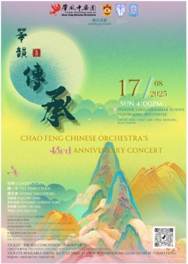
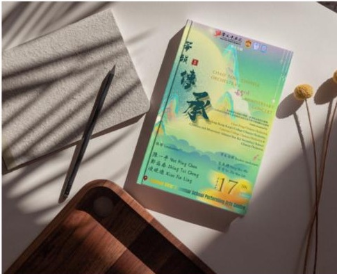
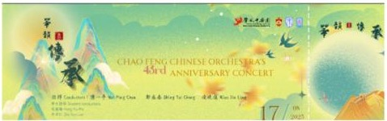
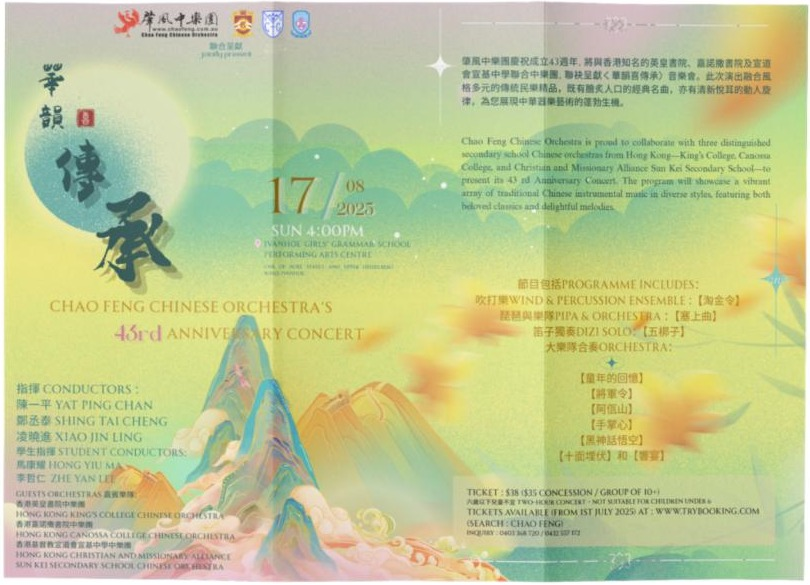

I create spaces to be encountered and experiences that continue to resonate after they disappear.
Stage, light & screen
Lighting Programming
Live studio production, Melbourne — view on Instagram Visual & Sound DesignVJing Performance
TouchDesigner, synthesizer, live instrument, Maya — watch on YouTubeVisual Screening
Federation Square, MelbourneChao Feng Concert
Chao Feng Chinese Orchestra — booklet, poster, ticket & handoutDesigned and programmed lighting for a live studio production staged at Melbourne's Capitol Theatre. Focused on atmospheric, low-contrast washes and negative space rather than high-impact effects, treating light as the emotional register of the piece rather than decoration.
View on InstagramResponsible for visual design and sound design for an immersive VJ performance exploring the relationship between contemporary digital media and Chinese cultural elements — using TouchDesigner, a sound synthesizer and live instrument playing, with 3D modelling in Maya.
Watch on YouTube

Original work presented at Federation Square, Melbourne. Developed an endless-loop visual journey exploring the principle of paradox, combining 3D modelling and 2.5D animation to create a continuously evolving digital environment. The work explores how opposing ideas can coexist within a single visual experience.




Responsible for the design of concert booklets, posters, tickets and handouts, developing a cohesive visual identity across the concert's communication and audience materials.